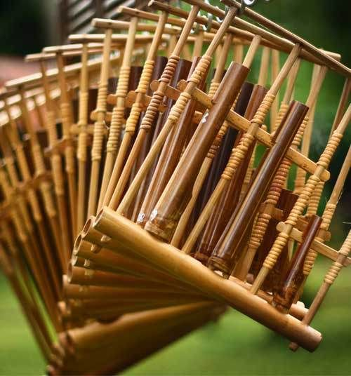

ANGKLUNG
Alat musik tradisional asal indonesia ini ternyata berasal dari Jawa Barat.
Angklung sendiri merupakan alat musik yang dibuat menggunakan bambu dan akan berbunyi saat angklung di getarkan atau digoyangkan.
Alat musik yang saat ini sudah manjadi warisan budaya.
sumber:Traveloka
ini adalah contohnya:
|  |
sumber:wikipedia